Far from any tip-surface interaction, the pulsation
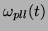
of the PLL (see figure 9) reference signal is set by the user to the free frequency of the cantilever such as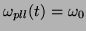
. The VCO (Voltage Controlled Oscillator), inside the PLL, produces this reference signal by the integration of the input voltage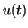
:
where
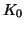
(in Hz) is the conversion factor (voltage to frequency) of the VCO [30].The signal which is proportional to the detuning,
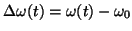
, of the cantilever frequency, is obtained by low-pass filtering the product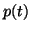
of the reference signal by the cantilever signal
In first approximation, if we consider
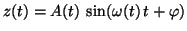
, one obtains:
with a limiter circuit, at the input of the PLL, that limits the signal amplitude
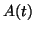
to a constant level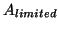
.
This signal then goes through a second order low-pass filter
defined by two time constants  and
and  :
:
Thanks to this low-pass filter, the low frequency part,
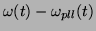
, of the signal is extracted. The parameter
When
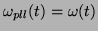
, the PLL is locked on the cantilever frequency. So, one can write, in the case of small changes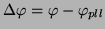
:
giving the frequency detuning
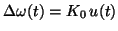
.